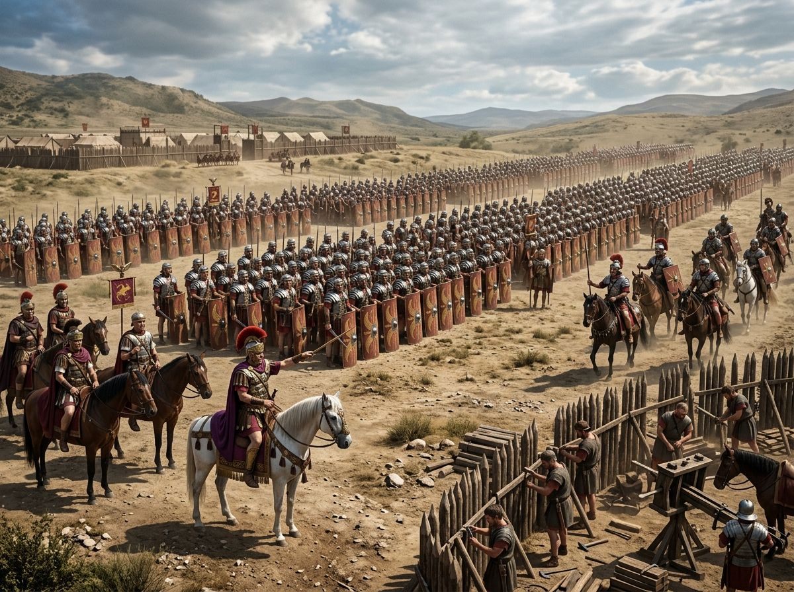

Los Pretorianos: La Guardia que Hacía y Deshacía Emperadores
En el año 41 después de Cristo, el día después de que un grupo de guardias pretorianos asesinara al emperador Calígula en los corredores del palacio imperial, los mismos guardias encontraron a Claudio —el tío de Calígula, un hombre de cincuenta años considerado medio idiota por la corte romana— escondido detrás de una cortina, aterrorizado. En lugar de matarlo, los pretorianos lo declararon emperador y lo llevaron a su campamento, donde fue aclamado por la guardia completa. El Senado, que se había reunido para discutir la posible restauración de la República, se enteró de que ya tenía un nuevo emperador que había sido elegido por los soldados.
Este episodio resume perfectamente el problema fundamental de la Guardia Pretoriana: era una institución creada para proteger al emperador que frecuentemente terminaba matándolo, y un cuerpo militar supuestamente apolítico que era en realidad uno de los actores políticos más poderosos del Imperio. Entre el 14 y el 235 d.C., los pretorianos asesinaron al menos a seis emperadores, participaron en la deposición de varios más, y en el famoso "año de los cuatro emperadores" (68-69 d.C.) cambiaron de bando repetidamente apoyando al candidato que prometiera la mayor donación de dinero.
Origen y Estructura
La Guardia Pretoriana fue fundada por Augusto, aunque sus antecedentes se remontan a la cohorte pretoria —la guardia personal del general en campaña— de la República tardía. Augusto organizó nueve cohortes de quinientos hombres cada una, con el propósito oficial de proporcionar una guardia personal al Princeps y mantener el orden en Italia. Para mantener las apariencias republicanas, dispersó las cohortes por varias ciudades italianas en lugar de concentrarlas en Roma.
Fue Sejano —el poderoso prefecto del pretorio bajo Tiberio— quien concentró toda la guardia en un único campamento permanente en Roma, el Castra Praetoria, en el norte de la ciudad. Esta decisión transformó la naturaleza política de la institución: en lugar de ser una guardia dispersa, se convirtió en una fuerza concentrada de entre cuatro mil y doce mil hombres (el número varió a lo largo del tiempo) ubicada en el corazón mismo de la capital imperial.
Los pretorianos recibían un sueldo significativamente más alto que los legionarios ordinarios —en los primeros tiempos del Imperio, tres veces más— y gozaban de condiciones de servicio más favorables: menos años de servicio, acceso a la capital con sus posibilidades de enriquecimiento e influencia, y la proximidad al poder que podía traducirse en favores, regalos y oportunidades. A cambio, se esperaba de ellos una lealtad absoluta al emperador. El problema era que esa lealtad era frecuentemente al cargo más que a la persona, y podía ser reorientada cuando los intereses personales o corporativos de la guardia lo aconsejaban.

Sejano: El Pretoriano que Intentó Ser César
El ejemplo más extraordinario de la ambición pretoriana es el de Lucio Elio Sejano, prefecto del pretorio durante el reinado de Tiberio. Sejano fue durante una década el hombre más poderoso del Imperio después del emperador: concentró la guardia en Roma, eliminó sistemáticamente a los rivales políticos —incluyendo a Druso, el hijo de Tiberio, al que probablemente envenenó—, y tejió una red de clientelismo e influencia que le permitía controlar el acceso al anciano Tiberio, que vivía retirado en Capri.
La ambición de Sejano llegó hasta querer casarse con una princesa de la familia imperial y eventualmente suceder a Tiberio. El plan fracasó cuando Tiberio —alertado por cartas de su cuñada Antonia— decidió destruir a Sejano en lugar de depender más de él. En el año 31 d.C., Tiberio envió al Senado una carta denunciando a Sejano, que fue arrestado, ejecutado el mismo día, y cuyos restos fueron arrojados a la multitud que los destrozó. Sus hijos y exesposa fueron ejecutados. Sus estatuas fueron derribadas. En pocas horas, el hombre más poderoso del Imperio después del emperador se convirtió en un damnatio memoriae —una memoria condenada al olvido oficial.
El Año 69 y la Mercantilización del Trono
El punto más bajo de la historia de la Guardia Pretoriana llegó en el 193 d.C., cuando tras el asesinato del emperador Pertinax, los pretorianos literalmente subastaron el trono imperial. Dos candidatos compitieron en la subasta: Sulpiciano, el suegro de Pertinax, y Didio Juliano, un rico senador. Didio Juliano ganó prometiendo más dinero por soldado pretoriano. El Senado lo ratificó. Pero el escándalo fue tan mayúsculo que los ejércitos de las provincias se rebelaron, y en dos meses Didio Juliano estaba muerto y había comenzado una nueva guerra civil.
La guardia pretoriana fue disminuida en poder e influencia por algunos emperadores —Vespasiano, Trajano, Adriano— pero nunca eliminada completamente. Su abolición definitiva llegó con Constantino I en el año 312 d.C., después de la batalla del Puente Milvio donde los pretorianos habían apoyado a su rival Majencio. Constantino disolvió la guardia, demolió el Castra Praetoria, y distribuyó a sus miembros por las legiones de frontera. Trescientos años de historia pretoriana terminaron con un decreto administrativo. El problema que habían representado —la concentración de fuerza militar en la capital— no desapareció: simplemente tomó otras formas.
"La Guardia Pretoriana fue el precio que pagó Roma por tener un poder centralizado en una ciudad sin murallas. Los soldados que debían proteger al emperador eran inevitablemente los más capaces de matarlo."
— Guy de la Bédoyère, Praetorian: The Rise and Fall of Rome's Imperial Bodyguard, 2017
Fuentes y Referencias Científicas
- Tácito — Anales, s. II d.C.
- Suetonio — Vida de los Doce Césares, s. II d.C.
- Guy de la Bédoyère — Praetorian, Yale University Press, 2017
- Anthony Barrett — Caligula: The Corruption of Power, Yale, 1990
Continúa leyendo
Coliseo Romano: Historia, Construcción y Gladiadores →